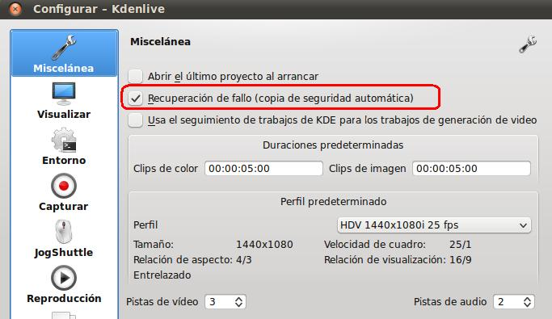

I. Settings
Esta ventana se refiere aspectos de la configuración del programa: Definir los perfiles (configuraciones básicas de nuestros proyectos, tales como resolución, fps, entre otros), el uso de temas, definir y administrar los contenidos de las barras de herramientas (toolsbars), Configurar aspectos del programa (definir aspectos como formas y dispositivos de captura, visualización, carpetas del entorno), configurar los atajos de teclado (shortcuts, formas de acceder a una opción del menú utilizando una combinación de teclas de nuestro teclado), entre otras.
- Administrar perfiles de proyecto: un perfil son una serie de normas y parámetros con los que definimos nuestro proyecto en curso. Entre estos aspectos tenemos una descripción, el tamaño o resolución de nuestro proyecto, la cantidad de fps (velocidad de cuadro o frames por segundo), el tipo de aspecto (4:3, 16:9, etc), entre otros. Por defecto el sistema nos tiene definido una serie de perfiles que podemos hacer uso de los mismos utilizando el Asistente de Configuración.
- Descargar y añadir nuevos perfiles (new stuff) a nuestros proyectos: Entra en Settings / Descargar nuevos perfiles de proyectos.
-
- Seleccionamos el perfil que deseamos instalar (1) y procedemos a su instalación (2).
- Al entrar en administrar perfiles ya tendremos agregado el nuevo perfil.
- Show StatusBar: el activar / desactivar permite que se muestre la barra de estado de la parte inferior del editor.
-
Atajos de Teclado (shortcurts): Esto permite realizar una acción u opción del programa utilizando una tecla o la combinación de varias. Ejemplo: crtl + F4 cierra, normalmente, la aplicación activa.
- Si entramos en configurar los atajos podemos ver las diversas acciones y los atajos definidos, por defecto, para ellos.
- Si deseas modificar alguno, selecciona (1) el comando o acción, selecciona el apartado custom (2) y procede a realizar la combinación o la tecla que desees asociar y, de forma automática, se le asigna dicha combinación. En el ejemplo siguiente asignamos crtl + F12 a buscar.
- Configurar Barra de Herramientas (toolbar): En alguna ocasión deseamos añadir algún comando o acción a la barra de herramientas. Por defecto, la barra de herramientas consta de los siguientes iconos.
- Si deseamos añadir un botón más o eliminar alguno, Settings / Configurar Toolbars. Selecciona en la parte izquierda (1) alguna de las acciones disponibles. En nuestro caso el switch que nos permite cambiar de idioma nuestro editor. Mueve (2) dicha acción a las actuales opciones.
- Una vez agregada y acepta (Ok), el resultado de tu barra de herramientas tendría un nuevo elemento.
- Si deseas cambiar el orden, puedes utilizar las flechas centrales para colocar los iconos a tu gusto subir (izquierda) y bajar (derecha).
- Configurar Kdenlive: Este apartado nos permite configurar los perfiles por defecto, la forma de guardar, lo que se visualizará en nuestra pantalla del editor, las rutas de las carpetas que utiliza el programa, las características de las capturas, la forma de reproducción y los perfiles que tenemos definidos para utilizar, tanto para definir nuestro proyecto, como para generar el video final.
- Miscelánea: En esta pestaña le podemos indicar si abrimos el último proyecto al iniciar el Kdenlive. Si realiza una copia de seguridad (recomendado) para recuperar en caso de fallos. Cuanto duran, por defectos nuestros clips de color y de imagen (hh:mm:ss:dd). El perfil determinado que utilizamos y el número de pistas de video y audio por defecto.
-
Entorno: Esta opción nos permite definir varios aspectos, pero nos concentraremos en las pestañas de carpetas predeterminadas y aplicaciones predeterminadas.
- En carpetas predeterminadas (2): el usuario puede modificar la ubicación de las carpetas de proyecto, de los ficheros temporales y la carpeta en la que grabará las capturas que se realicen con el editor.
- Aplicaciones: En este apartado el usuario puede modificar el reproductor por defecto del sistema, el editor de audio y el editor de imágenes (totem, Audacity y Gimp, por defecto).
-
Capturar: Este apartado nos permite configurar las opciones de las diversas formas de captura disponibles. A saber, puerto fireware, video4linux y captura de pantalla.
-
El puerto fireware nos permite capturar muchas de las cámaras de video actuales. Puedes definir el formato de captura (DV Raw, DV AVI, HDV, entre otros). Igualmente, el nombre con el que se va generar el fichero resultante y si deseas que lleve la fecha de captura, entre otros aspectos.
-
-
- El video4linux es una aplicación de captura de video en Linux. Si dispones de una webcam puedes capturar el video a través de esta opción. En ellos podemos definir el dispositivo donde se encuentra nuestro elemento de video, el tipo de formato, el tamaño de la imagen y una serie de parámetros que escapan a la finalidad de este curso, pero que se pueden encontrar en internet si alguien desea aumentar sus conocimientos.
-
-
Captura de pantalla: te permite capturar tu escritorio en un video. Hay aplicaciones que realizan este trabajo en software libre, entre ellas tenemos el gtk-recordmydesktop y Xvidcap. Podemos definir el tipo de frecuencia de audio, número de canales (recuerda si deseas el sonido estéreo debes indicar dos), los frames por segundo (velocidad), el bitrate, la calidad (0-100).
-
-
Reproducción: Este apartado nos permite indicar el controlador de audio y video. Para procesos iniciales recomendamos elegir los valores automáticos o por defecto.
-
Transcodificar: Esta opción permite convertir los diferentes clips con su códecs orginales a un fichero final con un códec. Se denomina transcodificar porque se realiza una conversión directa de códec a códec. Para realizar este tipo de perfiles de codificación se requieren algunos conocimientos que escapan a la finalidad de este curso.
-
- Si deseas agregar un nuevo perfil, añadir (1); indica el nombre del perfil (2) e indica los parámetros que contiene ese perfil (3). Igualmente, puedes eleiminar alguno de los perfiles, seleccionando (2) y eliminar perfil.
- Asistente de configuración (config wizard): la primera vez que iniciamos el kdenlive el programa nos inicia un asistente para configurar los principales parámetros de nuestra edición de video.
RECOMENDACIÓN
Entra en Settings / configurar Kdenlive / Miscelánea: Activa la recuperación automática. Si por error se cierra el programa puedes recuperar, al reiniciar, el proyecto cerrado.

Jo.R.C.A. 2004 - 2011

Edición de Audio y Video con Software Libre by José Ramón Cerdeira Alonso is licensed under a Creative Commons Reconocimiento-No comercial-Compartir bajo la misma licencia 3.0 España License